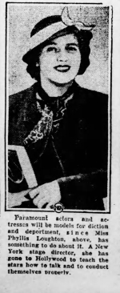
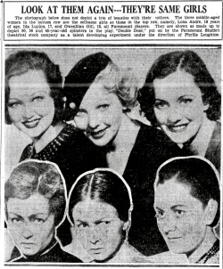

The paths of two fascinating women from the Golden Age of Hollywood intersected very early in their careers—an intersection illustrated by this photo of three teenagers made up to portray much older women. Only one of these two women is in this picture. At center is Ida Lupino, future movie star, producer and director—in make-up as the lead character in a stage production for Paramount studios. Off-camera is the director of the production, Phyllis Loughton.
At the time of the photo, Lupino was brand new to Hollywood and barely a year into her storied career in the public eye, while Loughton—“one-time child prodigy of the stage”—was also brand new to Hollywood, beginning her behind-the scenes career.
In December 1933, just a few weeks before this photo was taken, Phyllis Loughton had founded a stock company at Paramount to facilitate the training of the studio’s young actors and actresses. Today, the most famous of the classic Hollywood studio stock companies was the one run by Lela Rogers, Ginger Rogers' mother, at RKO—where legendary comedienne Lucille Ball received her early training. But Rogers’ school was over a year in the future when Loughton convinced Paramount to start their stock company. When Rogers was launching RKO's Little Theater in 1935, a Los Angeles reporter wrote, "It was Miss Loughton at Paramount who introduced the stage production idea to studios."
Ida Lupino and Phyllis Loughton arrived at Paramount nearly simultaneously, in late August 1933. At the time, Lupino was a 15-year-old movie actress from England and Loughton was a 26-year-old stage director from Detroit via Broadway. Lupino had played leading roles in six British films over the previous year when Paramount signed her and brought her to Hollywood as a top candidate for the role of Alice in their much-hyped production of Alice in Wonderland. More quietly, Paramount hired Loughton to take charge of training the studio's players in "diction, deportment and decorum".
Paramount soon decided not to cast Lupino as Alice, but rather give the role to Charlotte Henry. Lupino was destined for more adult features. "Miss Lupino... is a year younger in age [than Henry] and ten years older in experience and poise," wrote a columnist that November.
Lupino's first Hollywood movie, Search for Beauty, had her co-starring opposite Larry "Buster" Crabbe, an Olympic swimming champion making one of his earliest movies. Filmed in the late fall of 1933, this picture was the culmination of an international talent contest promoted by Paramount, where several dozen young men and women winners were brought to Hollywood to appear briefly in the movie. Six of these were signed to Paramount contracts. (Only one of the six had a Hollywood career of any length, an eighteen-year-old from Texas named Clara Lou Sheridan, who changed her name to Ann Sheridan the next year.)
At the same time, Phyllis Loughton convinced her new bosses to fund a stock company under her charge for the training of the studio's young talent. Under the headline "Young Picture Group to Do Stage Plays" on December 5, Los Angeles Times columnist Edwin Schallert wrote:
All for the sake of experience, a whole group of younger film players are going to do stage plays. The idea is being experimented with at the Paramount studio, and if it works out well, maybe the young stars will be seen in a public performance occasionally.
They include Larry (Buster) Crabbe, Ida Lupino, Kent Taylor, Barbara Fritchie, Toby Wing, Lona Andre, and the “Search for Beauty” group, including Eldred Tidbury, Colin Tapley, Alfred Delcambre, Julian Madison, Clara Lou Sheridan and Gwenllian Gill. There will probably be about sixty-five ready and willing to take part, and the plays will be presented in a theater set on one of the studio stages.
Phyllis Loughton, formerly with Jessie Bonstelle’s stock company in Detroit, and who has directed plays in the East, will have charge of the undertaking. At the start, the plays will be given just before the company’s own employees.
The first production of Loughton's company would be "Double Door"—a hit on Broadway a few months before and a story which Paramount was planning to film. "It is a grim melodrama of the inhumanities a rich woman practices upon her brother's bride to preserve intact the family fortune and the pearls," wrote Brooks Atkinson of the New York Times about the Broadway version.
Eleven players had parts in the Paramount stage version, with Ida Lupino in the leading role. While this production was not a public event, Paramount milked for publicity the old age make-up on Lupino and two other teenage actresses. Some press was also invited to witness the performance, which took place on January 12, 1934, barely a month after the first public announcement of Loughton's stock company.
The Detroit Free Press wrote up a brief item the next day:
Phyllis Loughton, Detroit actress and director, and now diction coach for Paramount, is in charge of the studio stock company, the purpose of which is to give screen aspirants acting experience.
The first production by the studio stock company was made Friday night, before an audience of newspaper critics, picture stars, directors and other studio workers.
"Double Door" was the offering, not the least important feature of which was the fact that youthful Ida Lupino portrayed the role of a fifty-five-year-old matron, with Gwenllian Gill, another starling, appearing as a fifty-year-old spinster."
George Shaffer wrote in the New York Daily News: "Ida Lupino did a highly creditable piece of dramatic acting in the studio's own stage presentation of "Double Door" by eleven members of the young talent at Paramount.... [T]he 18-year-old British lass played a woman in her sixties, stooped, over-bearing, with gray complexion and streaked brown hair."
Note that mistake in Lupino's age. She was in fact several weeks shy of her sixteenth birthday. But Paramount and Lupino both encouraged the press and public to believe she was older.
Syndicated columnist Robbin Coons wrote:
The other night Paramount's school, under the direction of Phyllis Loughton, presented a production of "Double Door," a play that will soon be made into a film. Executives, writers, and directors saw performances from mere cinematic youngsters that may make them think twice.
They saw Ida Lupino, a 17-year-old blonde, give a convincing portrayal of an aged, sour-on-life spinster, and Gwenllian Gill, a beauty contest winner, enact Ida's intimidated spinster sister. ... and Larry (Buster) Crabbe had one of his rare opportunities to emote with all his clothes on.
Lona Andre, Julian Madison, Clara Lou Sheridan, Eldred Tilbury, Colin Tapley, and Alfred Delcambre, all contest-winners, had their shining moments.
Aside from giving the youngsters something to do—and Miss Loughton avers that they all work like Trojans—and showing executives what they can do, the studio plays have the added value of giving the screen adapters hints regarding dramatic values.
Paramount extracted further publicity by proclaiming that Lupino's performance in "Double Door" had won her the leading feminine role in the film Come On Marines opposite Richard Arlen, which was to begin filming in late January. In fact, Lupino had been announced for this role several months earlier, albeit in a more tentative stage of production. (At that time, not-yet-superstar Cary Grant had been the prospective leading man.)
A few weeks after the stock company performance, Search for Beauty was released to theaters and Lupino sat for interviews. Robbin Coons described her as "a blue-eyed blonde of 17 who is dead-set against a screen career devoted to the portrayal of blue-eyed blondes of 17." She told him: "I'll not do it, I say! I'm not going to stay here [in Hollywood] to be an ingenue." Coons wrote:
Miss Lupino recently played an aged spinster in a studio play, the leading role in one of those productions staged by the junior players. It was a characterization far removed from her first screen role in "The Search for Beauty."
"I can do parts like that spinster for the screen. I want to do them, to play real characters. ... And I don't care what I look like on the screen. They can hollow my cheeks, gray my hair, dress me in rags and I'll be happy if I'm playing a real person. I don't care if I'm popular of not. That doesn't matter as long as I know I'm doing good work."
Ida Lupino and Phyllis Loughton worked together on at least one more stock company production. A few months later, the company's second production, "The Pursuit of Happiness", was staged with Lupino again in the lead role. This was another recent Broadway play that Paramount was planning to film. Los Angeles Times columnist Edwin Schallert wrote on May 29, 1934:
It looks as if it will be a very, very private affair, because royalties are involved if any outsiders see such a production. So the principals of the play, including Ida Lupino, Toby Wing, Randolph Scott, Eldred Tilbury, Alfred Delcambre, Clara Lou Sheridan, Julian Madison, Howard Wilson, Colin Tapley, Frank Losee and Douglas James, a number of them being 'Search for Beauty' contest winners, will do their emoting before an aggregation of their own studio folks.
The production is being given under the direction of Phyllis Laughton [sic].
The only photographic evidence I have found related to this play is from a pool party thrown afterwards to celebrate the young players' work. Lupino has her arm around Clara Lou (Ann) Sheridan, talking to actress Katherine De Mille and Paramount executive Melville Shauer, the host.
Just a couple weeks after this party, Lupino would be stricken with polio. Paramount delayed production of her next film, Ready for Love, until she was fit to participate. Fortunately, she recovered nearly completely within a few weeks. Later in 1934, Lupino and her mother travelled back to England to reunite with her father and sister for a vacation of several months, then returned to Hollywood and Paramount in January 1935.
Over the next few years, Lupino would not get the kind of dramatic screen roles she desired. Instead she was typed as an ingenue and light comedienne. She nonetheless persevered in Hollywood. It would take a prolonged career crisis in the late 1930s and a bold venture into the office of director William Wellman to land her the role in The Light That Failed (1939) that launched her celebrated dramatic career.
In the late 1940s, Lupino started her own production company, with one of the goals to train young actors and actresses—a venture that led to her becoming the only woman director in Hollywood in the post-war era. Could Lupino's desire to foster young talent have been inspired, at least in part, by the example of Phyllis Loughton?
After Double Door, Loughton continued as the dramatic coach at Paramount for several years, becoming a highly-respected member of the studio staff. Her work with young actors like Randolph Scott and Fred MacMurray was written up frequently in the press. In 1937, internal studio politics led to her being forced out of Paramount. Director Cecil B. DeMille, furious at how she had been treated, called her up to offer encouragement, saying, "Always remember, no one can fire you but yourself. Carry on."
Loughton continued her Hollywood career for over another decade, becoming an acting coach for big name stars such as Dorothy Lamour, Hedy Lamarr, Paulette Goddard and Ann Sothern. She worked closely with director Mitchell Leisen and almost became a director herself at various points in the 1940s.
As the 1950s began, Loughton left her Hollywood work behind and concentrated on raising her family. Soon, she became deeply involved in local politics under her married name, Phyllis Seaton. After a substantial political career, in 1973 she was elected by her fellow city council members as the first woman mayor of Beverly Hills—forty years after she had arrived in Southern California and founded the dramatic school for young players at Paramount studio.
Sources
- Newspapers.com archives for United States newspapers
These newspaper articles were not explicitly attributed in the text:
- "It was Miss Loughton..." — 1935 May 4, Los Angeles Evening Post-Record, "Hunt for Talent Begins at Home" by Virginia Wright
- "One-time child prodigy..." — 1935 Oct 13, Salt Lake Tribune, "Screen Demands Midwest Type, Says Film Scout"
- "Miss Lupino... is a year younger..." — 1933 Nov 26, Oakland Tribune, "Wonderland Film Girl Star-Gazes in Real Life" by Wood Soanes
- "Always remember..." - 1970 Dec 25, Los Angeles Times, "Times Woman of the Year: Beverly Hills Troubleshooter" by Art Seidenbaum
Explore further
- For more on Ida Lupino's career crisis in the late 1930s, see this earlier article: 1937: The year Ida Lupino's film career vaporized
- The film Search for Beauty has recently been released on Blu-ray by Kino Lorber.

Comments